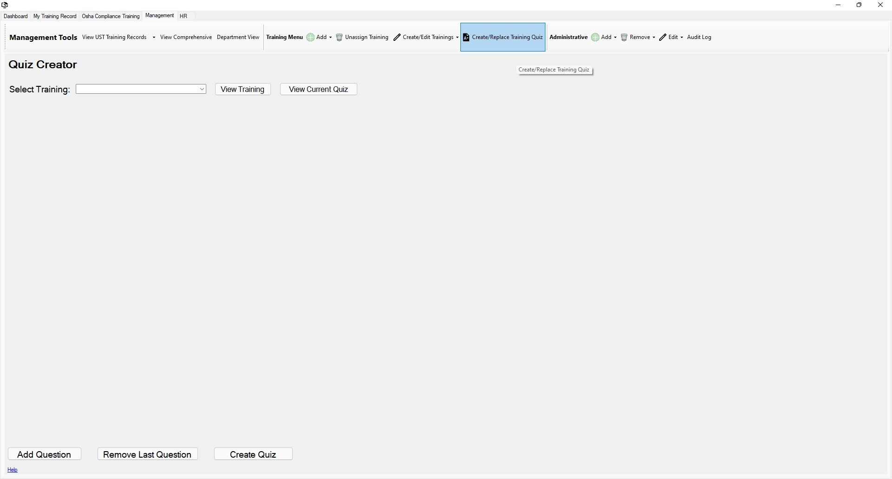

Return to Main Menu
Create/Replace a Training Quiz
The Create/Replace Training Quiz page can be accessed by pressing the "Create/Replace Training Quiz" button in the toolbar of the management tab.
On this page, you can create or replace a quiz for a current training.

Instructions:
-
Navigate to the Create/Replace Training Quiz page.
-
Using the "Select Training" drop down, select which training the quiz should be associated with.
-
If a training quiz already exists for this training, the "View Current Quiz" button can be clicked to view the current training quiz.
-
At the bottom of the page you will see three buttons: "Add Question", "Remove Last Question", and "Create Quiz" or "Replace Quiz".
The third button will read either "Create Quiz" or "Replace Quiz". This is dependent on whether you are creating or replacing a training quiz.
-
To add a question to the quiz, press the "Add Question".
-
In the text box to the right of the "Question:" label, enter the text you wish to be displayed for the respective question.
-
You can add and remove answers to a question using the "Add Answer" and "Remove Answer" buttons at the bottom of the question.
-
To remove a question: press the "Remove Question" button next to the text box of the question that you wish to remove.
-
You can also use the "Remove Last Question" button at the bottom of the page to remove the last question created.
-
To save the quiz, press the "Create Quiz"/"Replace Quiz" button at the bottom of the page.